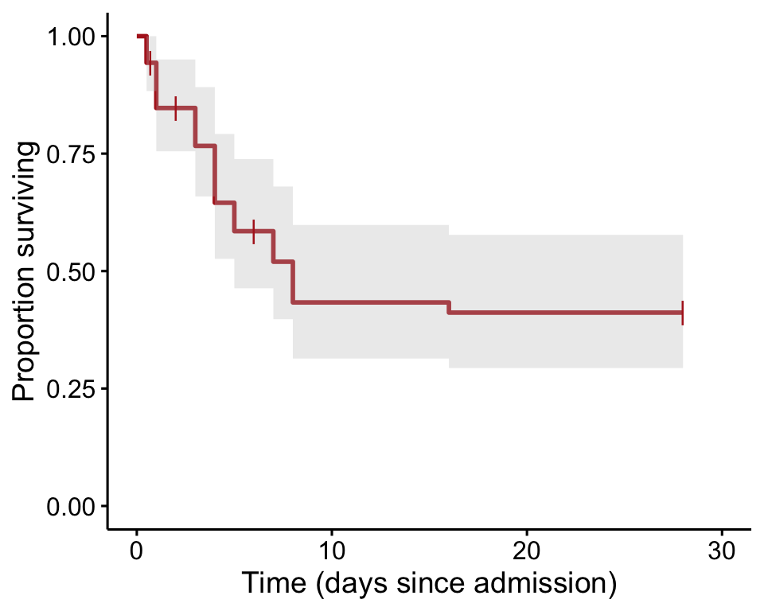
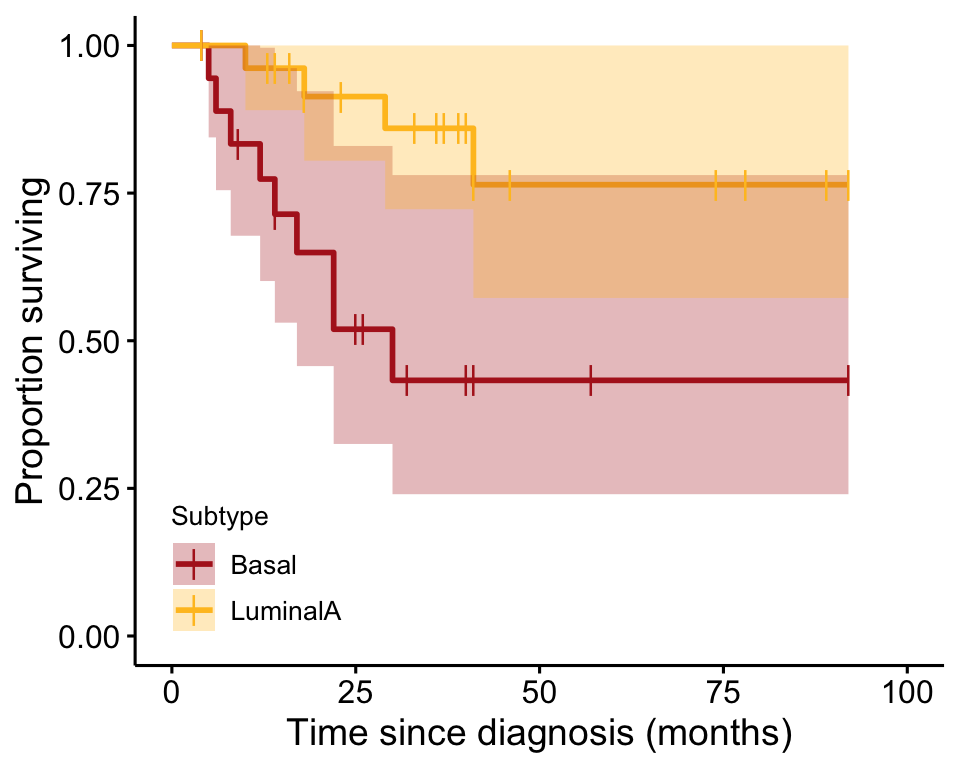
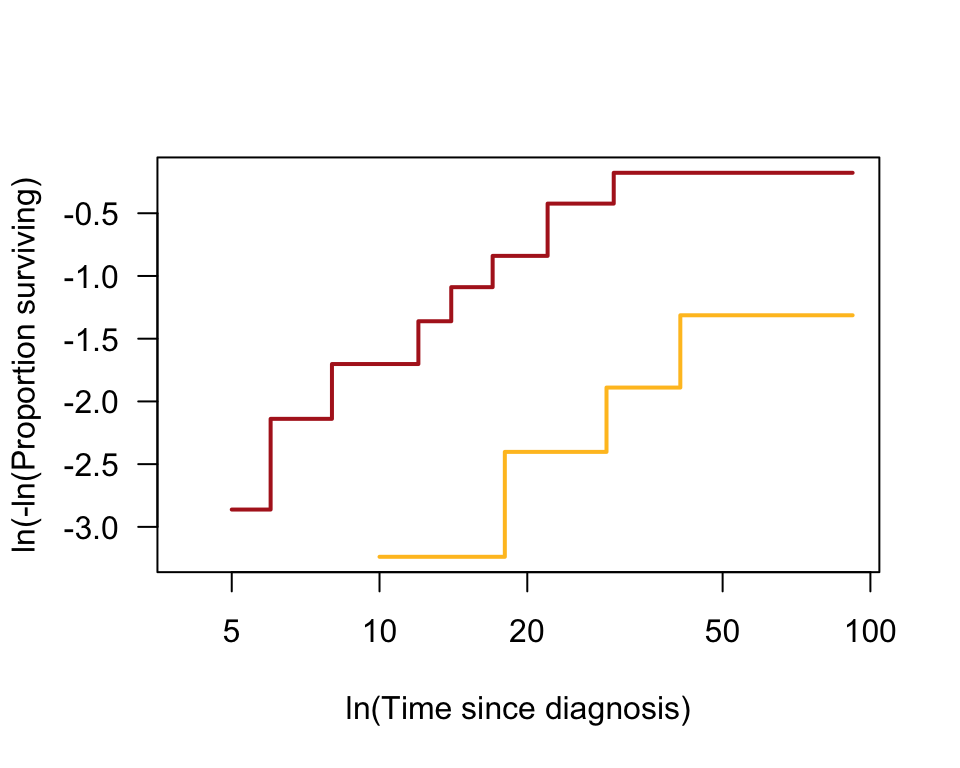

R code for example in Chapter 21:
Survival Analysis
We used R to analyze all examples in Chapter 21. We put the code here so that you can too.
New methods on this page
-
Survival curve:
ebolaSurv <- Surv(time = ebola$time, event = ebola$outcome) ebolaKM <- survfit(ebolaSurv ~ 1, data = ebola, type="kaplan-meier") -
Other new methods:
- Hazard ratio.
- Logrank test.
Load required packages
We need ggplot2 for ordinary graphs and two new packages for survival analysis. You might need to install these additional packages on your computer if you have not already done so.
install.packages("survival", dependencies = TRUE) # only if not yet installed
install.packages("survminer", dependencies = TRUE) # only if not yet installedlibrary(ggplot2)
library(survival)
library(survminer)Example 21.1 Ebola outbreak
Survival curve for patients diagnosed as having both Ebola virus disease and malaria at Ebola treatment centers in Sierra Leone in 2014-2015. The survival curve is calculated using the Kaplan-Meier method.
Read and inspect data
Each row is a subject. An event (death) is indicated if the variable outcome is 1, in which case time indicates the time of death. An outcome of 0 refers to no event (censored data), in which case time is the time of censoring.
ebola <- read.csv(url("https://whitlockschluter3e.zoology.ubc.ca/Data/chapter21/chap21e1EbolaMalaria.csv"))
head(ebola)## subject time outcome
## 1 1 0.5 1
## 2 2 0.5 1
## 3 3 0.5 1
## 4 4 0.7 0
## 5 5 1.0 1
## 6 6 1.0 1Survival curve
Survival curve based on the Kaplan-Meier method. First we run Surv() to convert the data to a format used by the survival package. Then the survfit() function is used to calculate the survival curve by fitting the survival data to a constant (since there is only 1 group of subjects).
ebolaSurv <- Surv(time = ebola$time, event = ebola$outcome)
ebolaKM <- survfit(ebolaSurv ~ 1, data = ebola, type="kaplan-meier") Finally, the curve is plotted (Figure 21.1-1).
ggsurvplot(ebolaKM, conf.int = TRUE, pval = FALSE, risk.table = FALSE,
legend = "none", censor.shape = "|", censor.size = 4, palette = c("firebrick"),
ylab = "Proportion surviving", xlab = "Time (days since admission)")
Proportion surviving
These are the quantities used to calculate the survival curve (Table 21.1-2), including confidence intervals.
summary(ebolaKM, censored = FALSE)## Call: survfit(formula = ebolaSurv ~ 1, data = ebola, type = "kaplan-meier")
##
## time n.risk n.event survival std.err lower 95% CI upper 95% CI
## 0.5 53 3 0.943 0.0317 0.883 1.000
## 1.0 49 5 0.847 0.0498 0.755 0.951
## 3.0 42 4 0.766 0.0592 0.659 0.892
## 4.0 38 6 0.645 0.0674 0.526 0.792
## 5.0 32 3 0.585 0.0695 0.463 0.738
## 7.0 27 3 0.520 0.0712 0.398 0.680
## 8.0 24 4 0.433 0.0713 0.314 0.598
## 16.0 20 1 0.412 0.0710 0.294 0.577Median survival time
Median survival time can be calculated if the study ends after survival proportion drops below 0.50.
ebolaKM## Call: survfit(formula = ebolaSurv ~ 1, data = ebola, type = "kaplan-meier")
##
## n events median 0.95LCL 0.95UCL
## 53 29 8 5 NAExample 21.2 Tumor genetics
In this example we compare the survival curves of two groups using the hazard ratio and the logrank test.
Read and inspect data
The data are survival times of patients with either of the two most common subtypes of breast cancer. Each row is a subject. An event (death) is indicated if the variable status is 1, in wich case OverallSurvivalMonths indicates the time of death. A status of 0 refers to no event (censored data), in which case `OverallSurvivalMonths is the time of censoring.
tumors <- read.csv(url("https://whitlockschluter3e.zoology.ubc.ca/Data/chapter21/chap21e2BreastCancer.csv"))
head(tumors)## ID Subtype OverallSurvivalMonths status
## 1 Norway FU17 LuminalA 4 0
## 2 Stanford 48 Basal 4 0
## 3 Norway FU12 Basal 5 1
## 4 New York 3 Basal 6 1
## 5 Norway FU19 Basal 8 1
## 6 Stanford 46 Basal 9 0Survival curve
Survival curve based on the Kaplan-Meier method. First we run Surv() to convert the data to a format used by the survival package. Then the survfit() function is used to calculate the survival curve by fitting the data to tumor Subtype (the variable indicating the two groups of subjects).
tumorSurv <- Surv(time = tumors$OverallSurvivalMonths, event = tumors$status)
tumorKM <- survfit(tumorSurv ~ Subtype, data = tumors, type="kaplan-meier") Finally, the curve is plotted (Figure 21.2-1).
ggsurvplot(tumorKM, conf.int = TRUE, pval = FALSE, risk.table = FALSE,
legend.labs=c("Basal", "LuminalA"),
legend = c(0.15, 0.15), break.time.by = 25,
legend.title = "Subtype",
censor.shape = "|", censor.size = 4,
palette=c("firebrick", "goldenrod1"),
xlab = "Time since diagnosis (months)",
ylab = "Proportion surviving")
Hazard ratio
If we assume that the ratio of hazard rates between the two groups remains the same at every time point, then the hazard ratio can be calculated using the quantities in the following table.
tumorDiff <- survdiff(tumorSurv ~ Subtype, data = tumors)
print(tumorDiff, digits = 4)## Call:
## survdiff(formula = tumorSurv ~ Subtype, data = tumors)
##
## N Observed Expected (O-E)^2/E (O-E)^2/V
## Subtype=Basal 19 9 4.442 4.678 7.223
## Subtype=LuminalA 27 4 8.558 2.428 7.223
##
## Chisq= 7.2 on 1 degrees of freedom, p= 0.0072D1 <- tumorDiff$obs[1]
D2 <- tumorDiff$obs[2]
E1 <- tumorDiff$exp[1]
E2 <- tumorDiff$exp[2]
HR <- (D1/D2)/(E1/E2)
HR## [1] 4.335565Standard errors and confidence interval can be calculated using the formula in the textbook.
SE_lnHR = sqrt(1/E1 + 1/E2)
SE_lnHR## [1] 0.5847999L = log(HR)
lower <- exp(L - 1.96*SE_lnHR)
upper <- exp(L + 1.96*SE_lnHR)
ci95 <- c(lower=lower, upper=upper)
ci95## lower upper
## 1.378015 13.640724Cox regression
Another way to approximate the hazard ratio is to use Cox regression, a topic beyond the scope of Chapter 21. The R commands are shown here for the sake of completeness.
The output includes an estimate of the hazard ratio that uses a different formula than the one used above and leads to a slightly different answer: H = 4.447 (and its inverse 1/H = 0.225) along with an approximate 95% confidence interval.
The output also includes the results of the logrank test.
z <- coxph(tumorSurv ~ Subtype, data = tumors)
summary(z)## Call:
## coxph(formula = tumorSurv ~ Subtype, data = tumors)
##
## n= 46, number of events= 13
##
## coef exp(coef) se(coef) z Pr(>|z|)
## SubtypeLuminalA -1.4923 0.2249 0.6042 -2.47 0.0135 *
## ---
## Signif. codes: 0 '***' 0.001 '**' 0.01 '*' 0.05 '.' 0.1 ' ' 1
##
## exp(coef) exp(-coef) lower .95 upper .95
## SubtypeLuminalA 0.2249 4.447 0.0688 0.7349
##
## Concordance= 0.705 (se = 0.06 )
## Likelihood ratio test= 6.78 on 1 df, p=0.009
## Wald test = 6.1 on 1 df, p=0.01
## Score (logrank) test = 7.27 on 1 df, p=0.007Logrank test
The survdiff()function provides the logrank test.
tumorDiff <- survdiff(tumorSurv ~ Subtype, data = tumors)
print(tumorDiff, digits = 4)## Call:
## survdiff(formula = tumorSurv ~ Subtype, data = tumors)
##
## N Observed Expected (O-E)^2/E (O-E)^2/V
## Subtype=Basal 19 9 4.442 4.678 7.223
## Subtype=LuminalA 27 4 8.558 2.428 7.223
##
## Chisq= 7.2 on 1 degrees of freedom, p= 0.0072Proportional hazards
A graphical test of the assumption of proportional hazards plots the log of the estimated proportions of individuals surviving at each time point in the two groups (the same values that are depicted in the survival curve) against log of time for each time point.
plot(tumorKM, fun = "cloglog", col = c("firebrick", "goldenrod1"),
las = 1, lwd = 2, ylab = "ln(-ln(Proportion surviving)",
xlab = "ln(Time since diagnosis)")